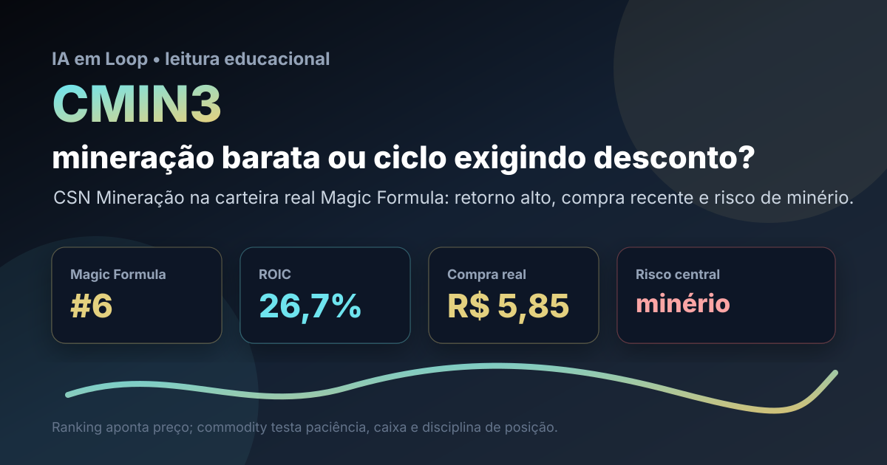

21/08: CMIN3, CSN Mineração e o desconto que depende do minério
CMIN3 voltou ao centro da carteira real Magic Formula depois da compra de agosto. A pergunta central é direta: ROIC alto e earnings yield forte bastam, ou a dependência do minério exige margem de segurança maior?

Mineração pode parecer barata quando o ciclo está favorável; a disciplina é separar retorno operacional real de lucro turbinado por preço de commodity.
Resposta curta: barato no filtro, mas o ciclo manda na tese
Na base local do IA em Loop, CMIN3 aparece em 6º lugar na Magic Formula, com ROIC de 26,67%, earnings yield de 19,61% e score final 29. A compra real de agosto registrou 29 ações a preço médio de R$ 5,85, total bruto de R$ 169,57, dentro da carteira Magic Formula B3. A página pública da carteira mostra CMIN3 como a maior fatia do método, com cerca de 15,0% da distribuição por ativo.
A leitura prática é: CMIN3 merece estar na carteira por preço e retorno, mas não deve ser tratada como renda defensiva. O lucro de uma mineradora depende de minério de ferro, volume embarcado, custo caixa, câmbio, frete, demanda chinesa e disciplina de dividendos. Se o minério recua, o múltiplo que parecia baixo pode subir rapidamente sem a ação precisar subir.
O que os dados verificados mostram
O dado mais importante é a combinação entre posição quantitativa e aporte real. CMIN3 não é apenas um nome teórico do ranking: ela recebeu compra na nota de agosto da carteira Magic Formula. Isso muda a pergunta do investidor de “vale estudar?” para “qual tamanho de posição aguenta o risco de commodity?”.
No ranking, o papel pontua por retorno sobre capital e rendimento dos lucros. Na carteira, aparece com peso relevante. A consequência é dupla: se a tese funcionar, a posição ajuda o resultado do método; se o minério virar contra, a concentração aumenta a volatilidade da carteira.
| Métrica verificada | Fonte/período | Valor | Leitura |
|---|---|---|---|
| Posição no ranking | Magic Formula IA em Loop | #6 | bom encaixe quantitativo |
| ROIC | Magic Formula IA em Loop | 26,67% | retorno operacional alto |
| Earnings yield | Magic Formula IA em Loop | 19,61% | lucro aparente elevado contra preço |
| Compra recente | Nota de corretagem de agosto | 29 ações a R$ 5,85 | posição real, não apenas watchlist |
| Peso na carteira | Carteira Magic Formula publicada | cerca de 15,0% | exposição relevante ao setor |
Por que CMIN3 importa agora
A tese importa porque mineração é um teste clássico para ranking quantitativo. O filtro enxerga lucro e retorno; o investidor precisa enxergar o ciclo. Em empresas de commodity, o resultado pode parecer excelente perto do pico e fraco demais perto do vale. Por isso, a margem de segurança precisa considerar preço normalizado do minério, câmbio, custo de produção e capacidade de manter dividendos sem fragilizar o balanço.
CMIN3 também conversa com a composição da carteira brasileira. A Magic Formula já tem nomes de seguros, construção, petróleo, autopeças e serviços. Mineração adiciona diversificação setorial, mas também aumenta a exposição a China, dólar e demanda global por aço. O benefício é preço; o risco é achar que preço baixo resolve ciclo.
CMIN3 é uma posição que faz sentido pelo método, mas pede acompanhamento ativo. O ativo melhora se caixa, custos e dividendos sobreviverem a um minério menos favorável. Piora se o lucro atual depender demais de uma janela boa do ciclo.
O que favorece e o que ameaça a tese
Favoráveis
• Ranking forte na Magic Formula, com ROIC alto e earnings yield elevado.
• Compra real recente, alinhando análise e carteira publicada.
• Negócio simples de entender: minério, escala, custo e logística.
• Possível geração de caixa relevante quando o ciclo de minério ajuda.
• Potencial de dividendos quando lucro e caixa estão fortes.
Desfavoráveis
• Alta dependência do preço internacional do minério de ferro.
• Demanda chinesa e produção de aço podem mudar rapidamente.
• Dividendos podem cair se o ciclo virar ou se o investimento aumentar.
• Peso relevante na carteira amplia volatilidade setorial.
• Múltiplo baixo pode ser armadilha se o lucro estiver acima do normal.
Checklist para acompanhar daqui em diante
- Preço do minério: comparar o lucro da companhia com cenários de minério mais baixo, não só com o preço recente.
- Custo caixa: observar se custo, frete e energia preservam margem mesmo em cenário menos favorável.
- Volume e qualidade: acompanhar produção, vendas e prêmio/desconto do minério vendido.
- Dividendos: checar se a distribuição vem de caixa recorrente ou de ciclo excepcional.
- Tamanho da posição: evitar que uma tese de commodity vire concentração involuntária na carteira.
Conclusão
A resposta para a pergunta do post é: CMIN3 parece barata e metodologicamente defensável, mas só é confortável com desconto contra um ciclo mais fraco de minério. A Magic Formula capturou retorno alto e lucro aparente forte; a carteira real assumiu a posição. O trabalho agora é não confundir bom ponto de entrada com ausência de risco.
Na régua do IA em Loop, CMIN3 segue como posição de carteira real com monitoramento de ciclo. Se minério, custo e caixa permanecerem saudáveis, o papel pode cumprir bem o papel de valor. Se o ciclo virar, a defesa não será narrativa: será tamanho de posição, caixa e preço pago.